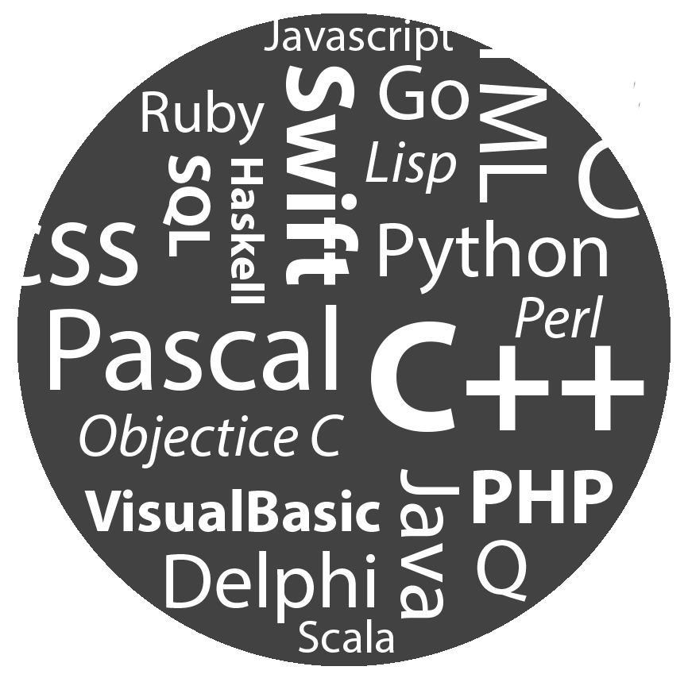
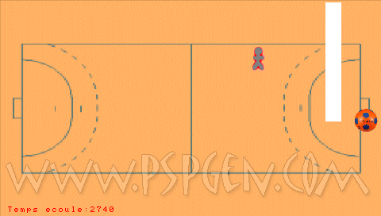
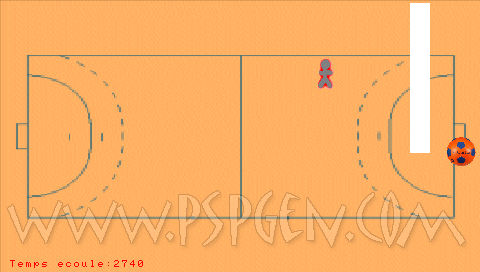
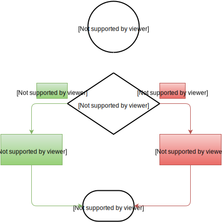
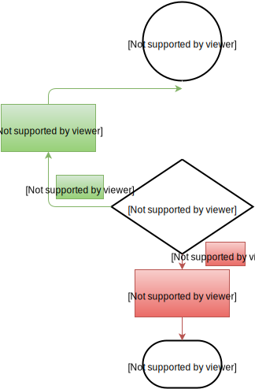
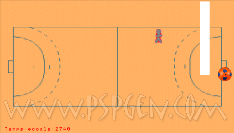

Let it code
Comment bien débuter la programmation ?
Au programme...
Notions historiques
Pourquoi ? Comment ?
Expériences personnelles
Les débuts de l'informatique
L'idée de base
Une multitude de problèmes
Une multitude de méthodes de résolution
L'idée de base
Inventer une machine universelle
Charles Babbage
(1791 - 1871)

La machine analytique
 CC BY-SA 2.5 - Bruno Barral
CC BY-SA 2.5 - Bruno Barral
 CC BY 2.0 - Karoly Lorentey
CC BY 2.0 - Karoly Lorentey
Inventée entre 1834 et 1836
Ada Lovelace
(1815 - 1852)

Première « programmeur »
Alan Turing
(1912 - 1954)

Alan Turing
- Formalisation du concept d'algorithme
- Machine de Turing
- Enigma
- Cryptographie, Biologie, Marathon …
- Film : The Imitation Game

Donald Knuth
(1938 - )

- Père de l'analyse d'algorithmes
- The Art of Computer Programming

Applications
Quels domaines font appel à la programmation ?
Quels domaines ne font pas appel à la programmation ?


Algorithmique


Expériences personnelles
 

Résolution rapide de problèmes
Résolution de problèmes non solvables d'une autre manière
Image
L'avenir est à la biotechnologie
Entreprises
Software Engineers
Métiers
- Software Engineer
- Chef de Projet
- Commercial
- …
Algorithmique
programmation
Quelles différences ?
Un algorithme
« Un algorithme est une suite finie et non ambiguë d’opérations ou d'instructions permettant de résoudre un problème. »
Source : WikipédiaUn algorithme
Une suite d'instructions :
- Claire
- Précise
Exemple : Recette de cuisine
Un programme ?
Algorithme $\rightarrow$ Langage de programmation
Par où commencer ?
L'algorithmique
Une logique à appréhender et à maîtriser
S'intéresser à...
Architecture des ordinateurs
…et fonctionnement
L'algorithmique
Condition
Boucle
Structures de données
Piles
Files
Quelques algorithmes de bases...
Algorithmes de tri
Selection Sort, Insertion Sort, Merge Sort, Heap Sort, Quick Sort...
Quel langage ?
Un langage, une syntaxe !
Une logique similaire
Python, bon langage pour débutants
Syntaxe : simple et facile à appréhender
« Python a été conçu de façon à ne pas se mettre en travers de votre chemin » - Kenneth Love
>>> 1 + 2
3
>>> print("Hello, world!")
Hello, world!
>>> def square(x):
... return x * x
...
>>> square(1.0)
1.0
>>> square(4.0)
16.0
>>> square(9.0)
81.0
Soyez curieux !
Différents paradigmes
Procédural
Fonctionnel
Orienté objet
Logique
Cours & Documentation
Pour débuter...
Beginner's Guide
Expériences personnelles
Flavien

IvEr PSP : 30,000+ téléchargements